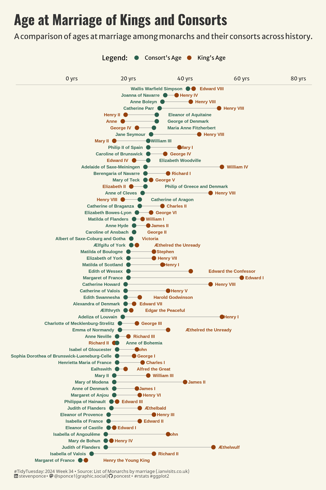

A comparison of ages at marriage among monarchs and their consorts across history
TidyTuesday
Data Visualization
R Programming
2024
Author
Steven Ponce
Published
August 19, 2024

Figure 1: The Dumbell chart compares monarchs’ ages and consorts’ ages at the time of marriage. The x-axis shows ages from 0 to 80 years, with green dots representing consorts’ ages and brown dots representing kings’ ages. Dotted lines connect each pair, indicating the age difference. The chart is organized by consorts’ ages, from the youngest at the bottom to the oldest at the top.
Steps to Create this Graphic
1. Load Packages & Setup
Code
```{r}#| label: loadpacman::p_load( tidyverse, # Easily Install and Load the 'Tidyverse' ggtext, # Improved Text Rendering Support for 'ggplot2' showtext, # Using Fonts More Easily in R Graphs janitor, # Simple Tools for Examining and Cleaning Dirty Data skimr, # Compact and Flexible Summaries of Data scales, # Scale Functions for Visualization lubridate, # Make Dealing with Dates a Little Easier MetBrewer, # Color Palettes Inspired by Works at the Metropolitan Museum of Art ggalt # Extra Coordinate Systems, 'Geoms', Statistical Transformations, Scales and Fonts for 'ggplot2' ) camcorder::gg_record(dir = here::here("temp_plots"),device ="png",width =8,height =12,units ="in",dpi =320)### |- resolution ----showtext_opts(dpi =320, regular.wt =300, bold.wt =800)```